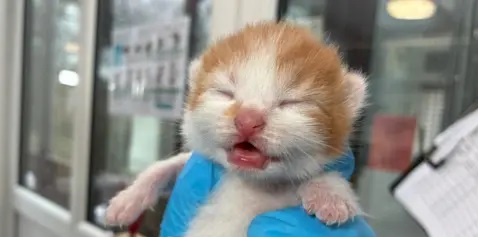
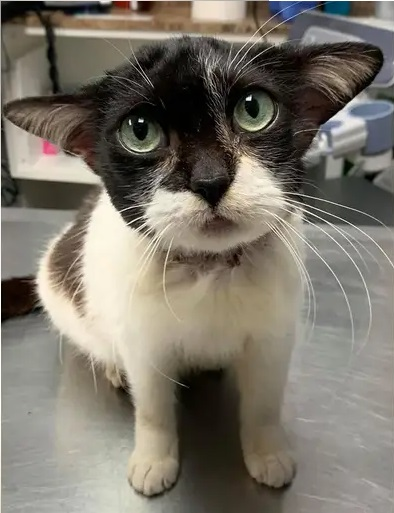
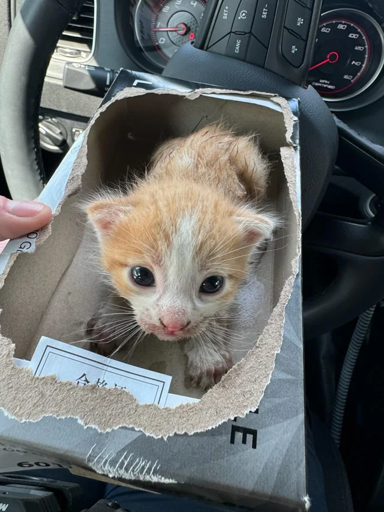

Welcome to Adopt Me!
Every cat deserves a home, so our goal is to help homeless cats find loving homes and get people to learn more about the stories behind the cats you welcome into your home.

About Us
Adopt Me! helps connect homeless cats with people who are interested in adopting them.
Featured Cats
Luna

Luna is a friendly cat that is waiting for a loving home, she spent her entire life as the sweet companion of an elderly lady. Sadly, her owner recently passed away, leaving Luna looking for a new place to live.
Milo

Milo is a playful cat that enjoys being around people. Milo is a high-energy kitten who was found wandering around a busy local park, chasing butterflies.
How to Adopt
Interested in adopting a cat? Learn about the adoption process.